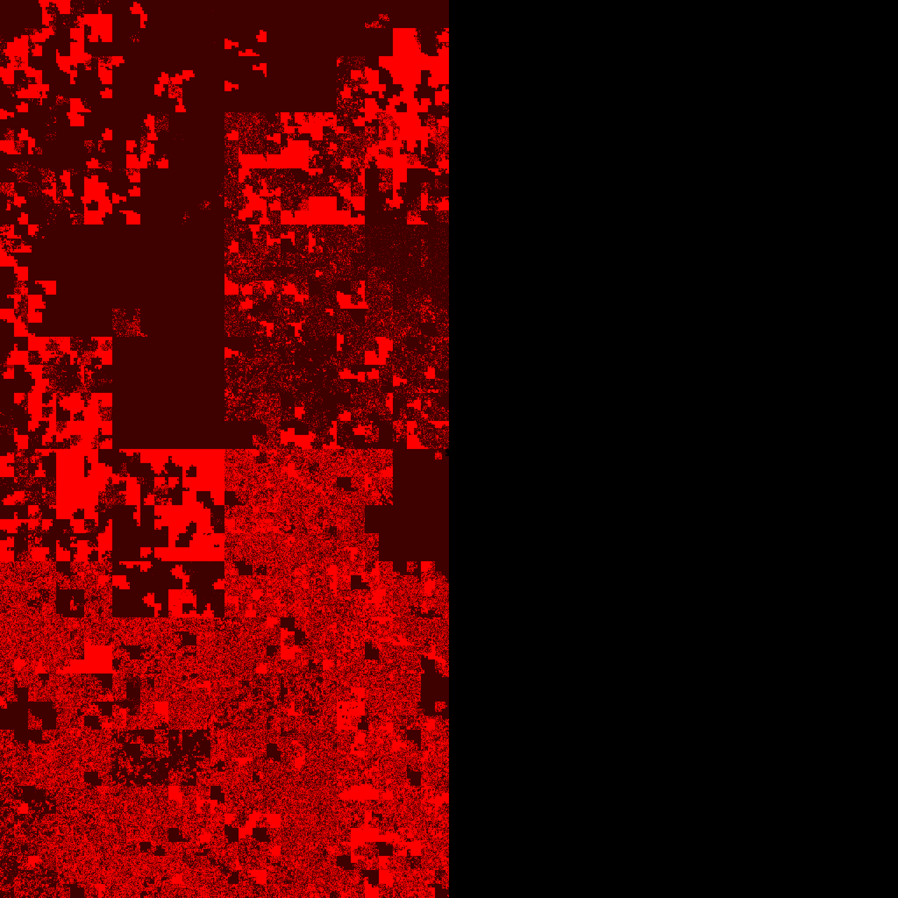
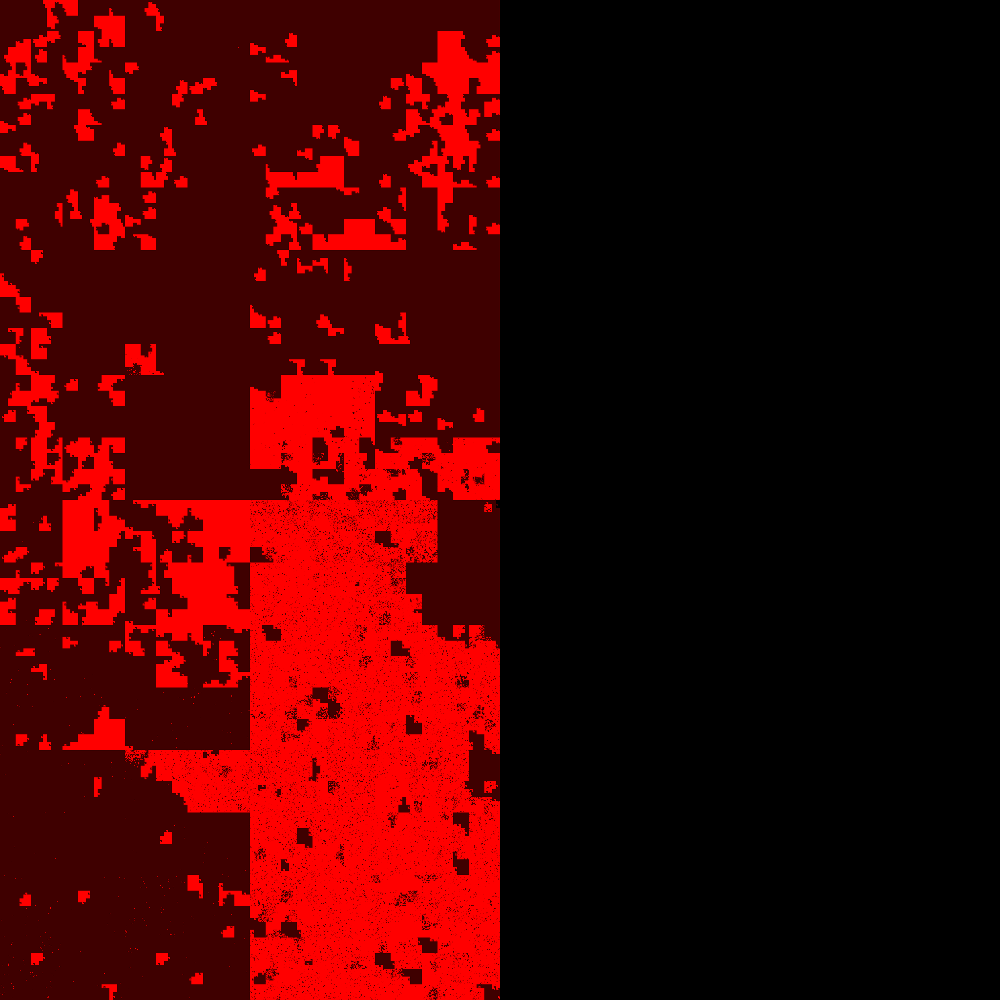

Intro
On Linux, memory is allocated by the buddy allocator. It allocates memory in chunks of sizes ranging from 4 kiB (a single page) to 4 MiB
We can inspect the available memory by chunk size with the pseudo-file /proc/buddyinfo. The first two lines indicate the size of each chunk, while the remaining lines indicate the number of available chunks:
$ cat /proc/buddyinfo
power of 2 2^0 2^1 2^3 2^4 2^5 2^6 2^7 2^8 2^9 2^10 2^11
size (kiB) 4 8 16 32 64 128 256 512 1024 2048 4096
Node 0, zone DMA 0 0 0 0 0 0 0 0 0 1 3
Node 0, zone DMA32 6584 4336 2566 1463 770 435 231 125 83 168 407
Node 0, zone Normal 61346 38894 16324 4993 1241 353 150 80 47 3 112
When a process claims memory, it is best if the buddy allocator can find a large enough chunks that fits the request.
Over time, the memory may become fragmented, and memory allocation will be less efficient: more small chunks will be available, at the expense of bigger chunks.
It is possible to defragment memory. Dropping caches first will improve compaction efficiency.
This is done by writing to two pseudo files. Here "3" will drop all caches.
# echo 1 > /proc/sys/vm/compact_memory
# echo 3 > /proc/sys/vm/drop_caches
Demo
VM specs
Server is a virtual machine running in VirtualBox with 8192 "MB" of memory.
$ free -m
total used free shared buff/cache available
Mem: 7484 3284 4096 12 379 4200
Swap: 1999 39 1960
$ sudo cat /proc/iomem | grep RAM
00001000-0009fbff : System RAM
00100000-dffeffff : System RAM
100000000-21fffffff : System RAM
Visual illustration
The following images were generated with the tool processes2png from my Github.
- Each image shows the physical memory of the server
- Black pixels on the right side are outside of RAM due to aspect ratio
- Each pixel represents 1 page (1 kiB)
- Cache is not visible. Kernel memory is not visible. Shared memory is visible if at least one process has a handle to it
- Bright pixels are pixels referenced by a process and dark pixels are not referenced by any process.
- This is a Hilbert curve, it preserves locality; meaning that close addresses are close on the picture.
Initial state

After compacting memory
After dropping caches

After compacting memory again
Same as a gif

Sources & References
- github.com/tatref- linux-mem
- docs.kernel.org - Documentation for /proc/sys/vm/
- Wikipedia - Hilbert curve
- grimoire.carcano.ch - Memory Management – The Buddy Allocator